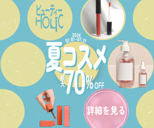

ポートフォリオサイト

制作期間
企画
デザイン
コーディング
使用ツール
Figma / Illustrator / Photoshop / CSS / HTML
概要
Webデザイン職への就職を目標に、これまでの学習成果を
実践的にアウトプットする場として制作したポートフォリオサイトです。
配色や余白、整列、視線誘導を意識した情報設計を行い、
分かりやすさと可読性を重視しました。
配色を軸に世界観を構築し、ビジュアルを通して自身の
価値観や姿勢が伝わるデザインを意識しています。